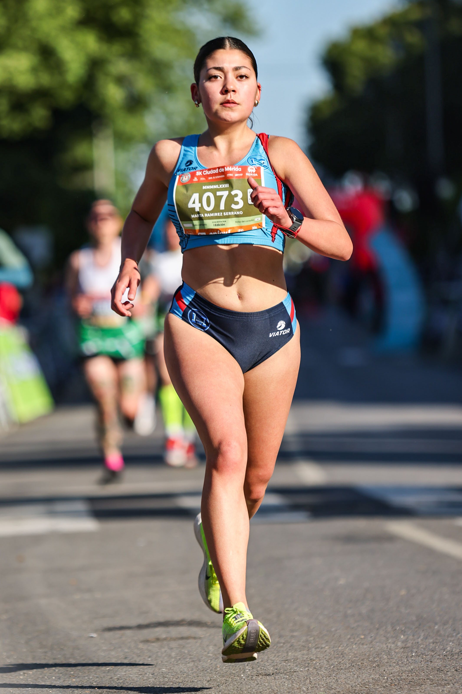
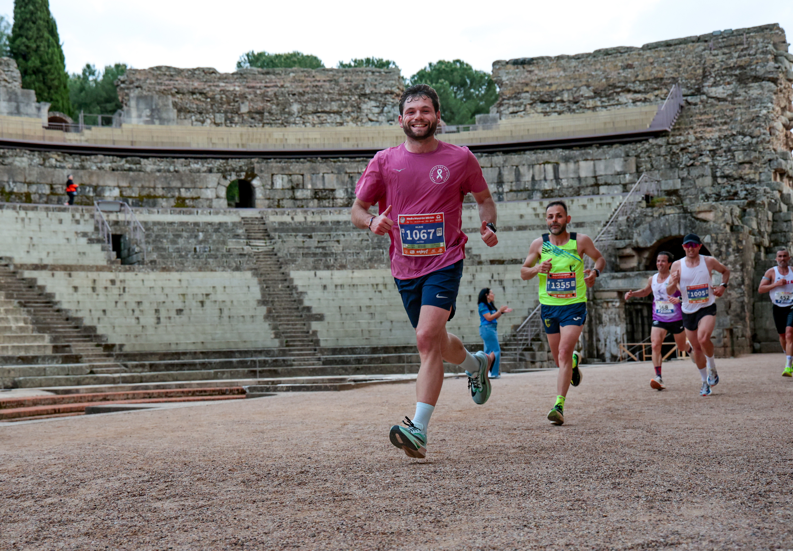

The XX Media Maratón de Mérida took the start and finish on the Paseo de Roma on Saturday 11 April 2026 at 19:00, with event coverage by the Image Media team. The 21.097-kilometre route crossed one of the best-preserved sets of Roman monuments in the world, passing the Roman Theatre and Amphitheatre, the Roman Bridge, the Arch of Trajan, the Aqueduct of Los Milagros, the Alcazaba and the Temple of Diana, on a course UNESCO declared a World Heritage Site in 1993.
This twentieth edition carried the official seal of the Spanish Half Marathon Championship, Absolute and Master categories, the first time the national title has been decided in Extremadura. Around 2,500 race bibs for the mass-participation event sold out roughly 40 minutes after registration opened, months before the start. Separately, 619 federation-registered athletes from 190 clubs across Spain competed for the national titles across the full Campeonato de España de Ruta weekend, which also included 5-kilometre and mile races the following day. The Master category alone admitted 414 athletes, 87 women and 327 men, in the 44th edition of that national championship.

The men's race was decided in a sprint finish. Abderrahmane Aferdi (Morocco) won the national title in 1:04:17, three seconds ahead of local runner Jorge González Rivera, who clocked 1:04:20. Javier Guerra Polo completed the podium in 1:04:55, with the top ten finishers all inside 1:08.
Fátima Ouhaddou Nafie, the reigning European marathon champion, led the women's race from the early kilometres and won in 1:14:53. Katherine Tisalema Puruncaja (Ecuador) took second in 1:15:20, 27 seconds back, and Lidia Campo Sastre completed the podium in 1:15:25. The top ten women all finished inside 1:21:15.

As in previous editions, the race carried a solidarity cause alongside the competition: organisers donate one euro for every finisher who crosses the line to the Asociación ELA Extremadura.
The Image Media coverage team comprised Felipe Albano, Luan Rodrigo, Tuca, Lucas and Ariel.